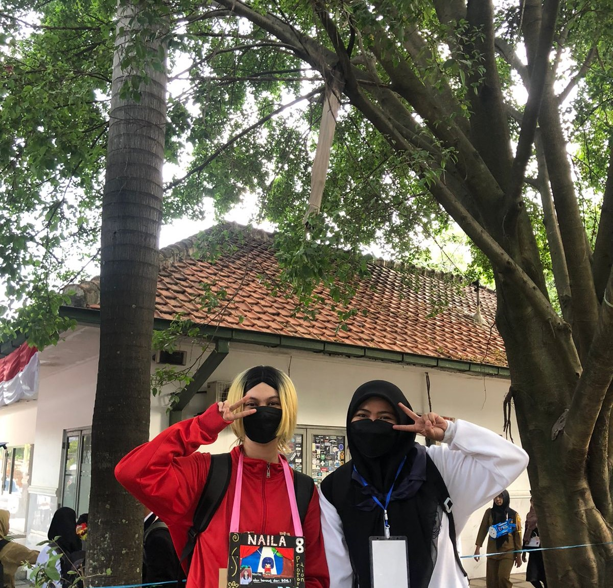

MY PROFILE
 Nama : Nurhayati
NIM : 10123105
Kelas : IF-2
Haikyuu

Haikyuu!! (ハイキュー!! , Haikyū!! , dari kanji 排球"bola voli") adalah serial manga Jepangyang ditulis dan diilustrasikan oleh Haruichi Furudate . Manga ini diserialkan dimajalah manga shōnen milik Shueisha Weekly Shonen Jump dari Februari 2012 hingga Juli 2020, dengan bab-babnya dikumpulkan dalam 45 volume tankōbon . Ceritanya mengikuti Shoyo Hinata , seorang anak laki-laki yang bertekad untuk menjadi pemain bola voli hebat meskipun bertubuh kecil.
Jujutsu

Jujutsu Kaisen (呪術廻戦, rgh. "Pertempuran Sihir") adalah serial manga Jepangyang ditulis dan diilustrasikan oleh Gege Akutami . Manga ini telah diserialkan dimajalah manga shōnen Weekly Shonen Jump milik Shueisha sejak Maret 2018, dengan bab-babnya dikumpulkan dan diterbitkan dalam 25 volume tankōbon pada Januari 2024. Ceritanya mengikuti siswa sekolah menengah Yuji Itadori saat ia bergabung dengan organisasi rahasia Penyihir Jujutsu untuk menghilangkan Kutukan kuat bernama Ryomen Sukuna , di mana Yuji menjadi tuan rumahnya. Jujutsu Kaisen adalah sekuel dari Tokyo Metropolitan Curse Technical School milik Akutami , yang diserialkan di Jump Giga milik Shueisha dari bulan April hingga Juli 2017, kemudian dikumpulkan dalam volume tankōbon , yang secara surut diberi judul Jujutsu Kaisen 0 , pada bulan Desember 2018.
One Piece

One Piece adalah serial manga Jepangyang ditulis dan diilustrasikan oleh Eiichiro Oda . Manga ini telah diserialkan dimajalah manga shōnen milik Shueisha , Weekly Shonen Jump sejak Juli 1997, dengan masing-masing bab dikompilasi dalam 107 volume tankōbon pada November 2023. Ceritanya mengikuti petualangan Monkey D. Luffy dan krunya, Bajak Laut Topi Jerami , di mana ia menjelajahi Grand Line untuk mencari harta karun mitos yang dikenal sebagai "One Piece" untuk menjadi Raja Bajak Laut
Naruto

Naruto Uzumaki adalah seorang ninja muda yang memiliki kekuatan besar yang tersembunyi di dalam dirinya, kekuatan yang mengisolasi dirinya dari seluruh desanya. Karena itu, satu-satunya impiannya adalah menjadi Hokage - ninja paling kuat, dan pemimpin desa; tapi pertama-tama dia harus lulus! Dengan ketidakmampuannya untuk melakukan teknik ninja paling dasar sekalipun, tampaknya yang dimiliki Naruto hanyalah tekadnya untuk sukses apa pun yang terjadi. Bekerja sama dengan Sasuke yang jenius, Sakura yang pandai membaca buku, dan pemimpin tim mereka Kakashi, Naruto memulai usahanya untuk menjadi Hokage. Tapi dengan kekuatan luar yang menjadi ancaman bagi seluruh desa Daun Tersembunyi, Naruto menyadari bahwa dia harus menjadi lebih kuat jika dia ingin mewujudkan mimpinya dan melindungi persahabatan yang telah dia jalin.